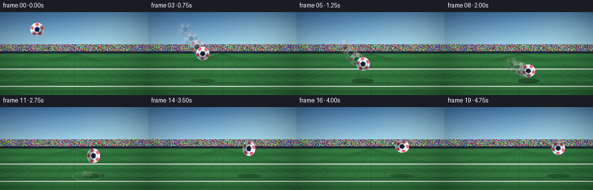
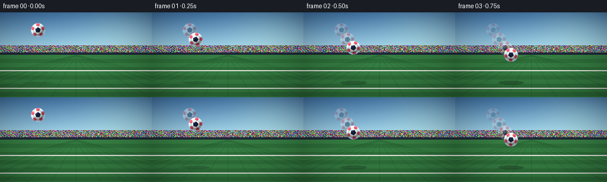
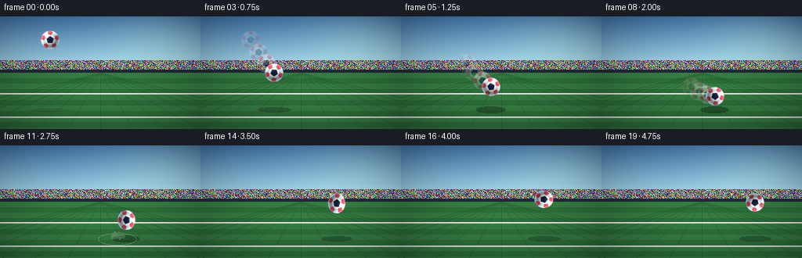

CODING AGENTS AS PIXEL WORLD MODELS
traex/Seed-2.1-Pro-0915 · phygen_029
点击播放 · 原生 RGB 像素
逐轮保存的候选
回放视频、检查图与代码变化。
每份候选均可单独播放。实际图片检查记录在下方工具轨迹中。
候选 01播放与检查图
点击播放 · 原生 RGB 像素


展开代码变化
--- 上一保存版本
+++ 本次保存版本
@@ -0,0 +1,306 @@
+"""Procedural RGB video: an elastic football thrown hard at the ground.
+
+Generates 20 frames (256x144, 4 fps) entirely with numpy + PIL: a textured
+turf/stadium scene, a shaded pentagon-panel football, parabolic flight,
+contact squash-and-stretch, rebound wobble, ghosts, dust and an impact ring.
+"""
+from __future__ import annotations
+
+import math
+from pathlib import Path
+
+import numpy as np
+from PIL import Image, ImageDraw
+
+import artifact_io
+
+W, H, N, FPS = 256, 144, 20, 4.0
+SS = 6 # supersampling factor for the ball sprite
+R_BALL = 18 # ball radius in frame pixels
+GROUND_Y = 120 # y of the turf surface
+HORIZON_Y = 72
+CONTACT_X = 150.0 # x where the ball strikes the ground
+IMPACT_K = 8.5 # frame index (continuous) of first contact
+
+rng = np.random.default_rng(7)
+
+
+# ---------------------------------------------------------------- background
+def build_background() -> Image.Image:
+ img = np.zeros((H, W, 3), dtype=np.float64)
+
+ # Sky gradient, warm top fading into a pale haze near the horizon.
+ top = np.array([74, 131, 187.0])
+ mid = np.array([151, 202, 226.0])
+ low = np.array([226, 238, 240.0])
+ for y in range(HORIZON_Y + 14):
+ t = y / (HORIZON_Y + 13)
+ if t < 0.62:
+ c = top + (mid - top) * (t / 0.62)
+ else:
+ c = mid + (low - mid) * ((t - 0.62) / 0.38)
+ img[y, :, :] = c
+
+ # Soft sun glow, upper right.
+ yy, xx = np.mgrid[0:H, 0:W]
+ glow = np.exp(-(((xx - 205) / 70) ** 2 + ((yy - 20) / 46) ** 2))
+ img[:HORIZON_Y + 14] += glow[:HORIZON_Y + 14, :, None] * np.array([26, 24, 10])
+
+ pil = Image.fromarray(np.clip(img, 0, 255).astype(np.uint8))
+ d = ImageDraw.Draw(pil)
+
+ # Distant stadium stands with a crowd-speckle band.
+ d.rectangle([0, HORIZON_Y - 16, W, HORIZON_Y], fill=(47, 58, 78))
+ crowd = rng.integers(0, 255, size=(16, W, 3))
+ crowd_pil = Image.fromarray(crowd.astype(np.uint8)).resize((W, 16))
+ pil.paste(crowd_pil, (0, HORIZON_Y - 16))
+ d = ImageDraw.Draw(pil)
+ d.rectangle([0, HORIZON_Y - 4, W, HORIZON_Y], fill=(33, 41, 56))
+ for x in range(0, W, 24):
+ d.line([(x, HORIZON_Y - 16), (x + 10, HORIZON_Y - 4)], fill=(70, 82, 104))
+
+ # Turf with alternating mow stripes.
+ stripe_a = (54, 126, 67)
+ stripe_b = (46, 112, 58)
+ for y in range(HORIZON_Y, H):
+ band = ((y - HORIZON_Y) // 7) % 2
+ d.line([(0, y), (W, y)], fill=stripe_a if band == 0 else stripe_b)
+
+ # Faint perspective seams converging at the vanishing point.
+ seam = Image.new("RGBA", (W, H), (0, 0, 0, 0))
+ sd = ImageDraw.Draw(seam)
+ for i in range(-7, 8):
+ x_bottom = W // 2 + i * 42
+ sd.line([(W // 2, HORIZON_Y), (x_bottom, H)], fill=(20, 60, 30, 70))
+ pil = Image.alpha_composite(pil.convert("RGBA"), seam).convert("RGB")
+ d = ImageDraw.Draw(pil)
+
+ # White pitch lines (horizontal, slightly softened).
+ for ly in (98, 128):
+ d.line([(0, ly), (W, ly)], fill=(236, 240, 232))
+ d.line([(0, ly + 1), (W, ly + 1)], fill=(206, 214, 200))
+
+ # Gentle vignette to focus the scene.
+ vig = 1.0 - 0.18 * (((xx - W / 2) / (W / 2)) ** 2 + ((yy - H / 2) / (H / 2)) ** 2)
+ out = np.clip(np.asarray(pil).astype(np.float64) * vig[..., None], 0, 255)
+ return Image.fromarray(out.astype(np.uint8))
+
+
+# ------------------------------------------------------------- ball sprite
+def _pentagon(cx: float, cy: float, radius: float, rotation_deg: float):
+ a0 = math.radians(rotation_deg - 90)
+ return [
+ (
+ cx + radius * math.cos(a0 + i * 2 * math.pi / 5),
+ cy + radius * math.sin(a0 + i * 2 * math.pi / 5),
+ )
+ for i in range(5)
+ ]
+
+
+def build_ball_sprite() -> Image.Image:
+ """Render a shaded classic-panel football once, at high resolution."""
+ r = R_BALL * SS
+ pad = 10 * SS
+ p = 2 * r + 2 * pad
+ c = r + pad
+
+ layer = Image.new("RGB", (p, p), (0, 0, 0))
+ mask = Image.new("L", (p, p), 0)
+ md = ImageDraw.Draw(mask)
+ md.ellipse([c - r, c - r, c + r, c + r], fill=255)
+
+ d = ImageDraw.Draw(layer)
+ d.ellipse([c - r, c - r, c + r, c + r], fill=(244, 247, 250))
+
+ navy = (20, 33, 61)
+ red = (239, 71, 86)
+ teal = (6, 182, 160)
+
+ # Central pentagon.
+ d.polygon(_pentagon(c, c, 0.42 * r, 0), fill=navy)
+ # Five surrounding pentagons, each pointing back toward the centre.
+ for i in range(5):
+ ang = math.radians(-90 + i * 72)
+ px = c + 0.80 * r * math.cos(ang)
+ py = c + 0.80 * r * math.sin(ang)
+ d.polygon(_pentagon(px, py, 0.30 * r, math.degrees(ang) + 180), fill=red)
+
+ # Thin teal accent ring, clipped to the disk by the alpha mask later.
+ d.ellipse(
+ [c - 0.64 * r, c - 0.64 * r, c + 0.64 * r, c + 0.64 * r],
+ outline=teal,
+ width=max(2, int(0.028 * r)),
+ )
+
+ arr = np.asarray(layer).astype(np.float64)
+ yy, xx = np.mgrid[0:p, 0:p]
+ dx = (xx - c) / r
+ dy = (yy - c) / r
+ dist2 = dx * dx + dy * dy
+ nz = np.sqrt(np.clip(1.0 - dist2, 0.0, 1.0))
+
+ # Diffuse shading: key light from the upper left.
+ lx, ly, lz = -0.48, -0.58, 0.66
+ norm = math.sqrt(lx * lx + ly * ly + lz * lz)
+ lx, ly, lz = lx / norm, ly / norm, lz / norm
+ diffuse = np.clip(dx * lx + dy * ly + nz * lz, 0.0, 1.0)
+ shade = 0.52 + 0.62 * diffuse
+ arr *= shade[..., None]
+
+ # Rim light on the lower-right edge.
+ rim = np.clip((np.sqrt(dist2) - 0.78) / 0.22, 0, 1)[..., None]
+ arr += rim * np.array([40, 70, 95])
+
+ # Specular highlight, upper left.
+ spec = np.exp(-(((dx + 0.38) / 0.20) ** 2 + ((dy + 0.42) / 0.24) ** 2))
+ arr += spec[..., None] * np.array([150, 155, 160])
+
+ rgba = np.dstack([np.clip(arr, 0, 255), np.asarray(mask)])
+ return Image.fromarray(rgba.astype(np.uint8), "RGBA")
+
+
+# ---------------------------------------------------------------- dynamics
+def trajectory(k: float):
+ """Return (cx, cy) of the ball centre at continuous frame k."""
+ if k <= IMPACT_K:
+ dt = IMPACT_K - k
+ cx = 64 + (CONTACT_X - 64) * (1 - dt / IMPACT_K)
+ cy = GROUND_Y - R_BALL - 1.0 * dt * dt
+ else:
+ dt = k - IMPACT_K
+ cx = CONTACT_X + 4.4 * dt
+ cy = GROUND_Y - R_BALL - 8.2 * dt + 0.5 * dt * dt
+ return cx, cy
+
+
+def deformation(k: float):
+ """Volume-preserving squash/stretch scales (sx, sy)."""
+ if k < 7.8:
+ return 1.0, 1.0
+ if k < IMPACT_K: # initial contact flattening
+ t = (k - 7.8) / (IMPACT_K - 7.8)
+ sy = 1.0 - 0.16 * t
+ elif k <= IMPACT_K + 0.5: # maximum squash
+ sy = 0.56
+ elif k <= IMPACT_K + 1.8: # rebound push-off
+ t = (k - (IMPACT_K + 0.5)) / 1.3
+ sy = 0.56 + 0.30 * min(1.0, t)
+ else: # elastic wobble while airborne
+ t = k - (IMPACT_K + 1.8)
+ sy = 1.0 + 0.26 * math.exp(-t / 4.5) * math.cos(1.7 * t)
+ sy = max(0.55, min(1.28, sy))
+ sx = 1.0 / math.sqrt(sy) # preserve area
+ return sx, sy
+
+
+def spin_angle(k: float) -> float:
+ if k <= IMPACT_K:
+ return -13.0 * k
+ return -13.0 * IMPACT_K - 7.0 * (k - IMPACT_K)
+
+
+# --------------------------------------------------------------- compositing
+def paste_ball(canvas: Image.Image, sprite: Image.Image, cx, cy, sx, sy, theta, alpha=255):
+ w = max(4, int(round(2 * R_BALL * sx)))
+ h = max(4, int(round(2 * R_BALL * sy)))
+ frame = sprite.rotate(theta, resample=Image.Resampling.BICUBIC)
+ frame = frame.resize((w, h), Image.Resampling.BICUBIC)
+ if alpha < 255:
+ a = np.asarray(frame).copy()
+ a[..., 3] = (a[..., 3].astype(np.uint16) * alpha // 255).astype(np.uint8)
+ frame = Image.fromarray(a, "RGBA")
+ canvas.alpha_composite(frame, (int(round(cx - w / 2)), int(round(cy - h / 2))))
+
+
+def main() -> None:
+ background = build_background().convert("RGBA")
+ sprite = build_ball_sprite()
+
+ # Deterministic dust particles kicked up at the contact point.
+ dust = []
+ for _ in range(26):
+ ang = rng.uniform(math.pi * 0.05, math.pi * 0.95)
+ speed = rng.uniform(1.2, 3.6)
+ dust.append(
+ {
+ "vx": math.cos(ang) * speed * rng.choice([-1, 1]),
+ "vy": math.sin(ang) * speed + 0.6,
+ "r": rng.uniform(1.2, 2.6),
+ "off": rng.uniform(0, 0.8),
+ }
+ )
+
+ history = []
+ frames = []
+ for k in range(N):
+ layer = background.copy()
+ d = ImageDraw.Draw(layer)
+
+ cx, cy = trajectory(k)
+ sx, sy = deformation(k)
+ if k >= IMPACT_K - 0.7: # keep the sole on the turf
+ cy = min(cy, GROUND_Y - R_BALL * sy)
+ theta = spin_angle(k)
+ height = max(0.0, GROUND_Y - (cy + R_BALL * sy))
+
+ # Contact shadow: tighter and darker as the ball nears the ground.
+ closeness = float(np.clip(1.0 - height / 110.0, 0.12, 1.0))
+ sw = R_BALL * sx * (1.55 - 0.55 * closeness)
+ sh = max(2.0, 5.0 * closeness)
+ shadow = Image.new("RGBA", (W, H), (0, 0, 0, 0))
+ ImageDraw.Draw(shadow).ellipse(
+ [cx - sw, GROUND_Y - sh, cx + sw, GROUND_Y + sh * 0.7],
+ fill=(12, 26, 16, int(110 * closeness)),
+ )
+ layer = Image.alpha_composite(layer, shadow)
+ d = ImageDraw.Draw(layer)
+
+ # Impact ring and dust, starting at first contact.
+ t = k - IMPACT_K
+ if t >= 0:
+ ring = Image.new("RGBA", (W, H), (0, 0, 0, 0))
+ rd = ImageDraw.Draw(ring)
+ rr = 3 + 8.5 * t
+ ra = int(max(0, 150 * (1 - t / 4.2)))
+ if ra > 0:
+ rd.ellipse(
+ [CONTACT_X - rr, GROUND_Y - rr * 0.32,
+ CONTACT_X + rr, GROUND_Y + rr * 0.32],
+ outline=(230, 236, 222, ra),
+ width=1,
+ )
+ for p in dust:
+ age = t - p["off"]
+ if age < 0:
+ continue
+ px = CONTACT_X + p["vx"] * age
+ py = GROUND_Y - 2 - p["vy"] * age + 0.45 * age * age
+ if py > GROUND_Y + 3:
+ continue
+ pa = int(max(0, 150 * (1 - age / 3.4)))
+ if pa:
+ pr = p["r"]
+ rd.ellipse([px - pr, py - pr, px + pr, py + pr],
+ fill=(214, 222, 198, pa))
+ layer = Image.alpha_composite(layer, ring)
+
+ # Motion-blur ghosts from recent flight history.
+ for age, alpha in ((3, 38), (2, 60), (1, 95)):
+ if k - age >= 0 and k < IMPACT_K + 1:
+ hx, hy, hsx, hsy, hth = history[k - age]
+ paste_ball(layer, sprite, hx, hy, hsx, hsy, hth, alpha)
+
+ paste_ball(layer, sprite, cx, cy, sx, sy, theta)
+ history.append((cx, cy, sx, sy, theta))
+
+ frames.append(np.asarray(layer.convert("RGB"), dtype=np.uint8))
+
+ frames = np.stack(frames, axis=0)
+ case_dir = Path(__file__).resolve().parent
+ artifact_io.save(frames, case_dir)
+ print(f"saved {frames.shape} frames to {case_dir}")
+
+
+if __name__ == "__main__":
+ main()
候选 02播放与检查图
点击播放 · 原生 RGB 像素

展开代码变化
--- 上一保存版本
+++ 本次保存版本
@@ -21,6 +21,8 @@
HORIZON_Y = 72
CONTACT_X = 150.0 # x where the ball strikes the ground
IMPACT_K = 8.5 # frame index (continuous) of first contact
+CONTACT_DUR = 1.8 # frames the ball spends compressed on the turf
+LIFTOFF_K = IMPACT_K + CONTACT_DUR
rng = np.random.default_rng(7)
@@ -167,29 +169,38 @@
dt = IMPACT_K - k
cx = 64 + (CONTACT_X - 64) * (1 - dt / IMPACT_K)
cy = GROUND_Y - R_BALL - 1.0 * dt * dt
- else:
+ elif k <= LIFTOFF_K:
+ # On the turf while compressing and recovering: sole stays planted.
+ _, sy = deformation(k)
dt = k - IMPACT_K
cx = CONTACT_X + 4.4 * dt
- cy = GROUND_Y - R_BALL - 8.2 * dt + 0.5 * dt * dt
+ cy = GROUND_Y - R_BALL * sy
+ else:
+ dt = k - LIFTOFF_K
+ cx = CONTACT_X + 4.4 * (k - IMPACT_K)
+ cy = GROUND_Y - R_BALL - 10.5 * dt + 0.82 * dt * dt
return cx, cy
+
+
+def _smoothstep(x: float) -> float:
+ x = min(1.0, max(0.0, x))
+ return x * x * (3.0 - 2.0 * x)
def deformation(k: float):
"""Volume-preserving squash/stretch scales (sx, sy)."""
- if k < 7.8:
+ if k < IMPACT_K: # rigid incoming flight
return 1.0, 1.0
- if k < IMPACT_K: # initial contact flattening
- t = (k - 7.8) / (IMPACT_K - 7.8)
- sy = 1.0 - 0.16 * t
- elif k <= IMPACT_K + 0.5: # maximum squash
- sy = 0.56
- elif k <= IMPACT_K + 1.8: # rebound push-off
- t = (k - (IMPACT_K + 0.5)) / 1.3
- sy = 0.56 + 0.30 * min(1.0, t)
- else: # elastic wobble while airborne
- t = k - (IMPACT_K + 1.8)
- sy = 1.0 + 0.26 * math.exp(-t / 4.5) * math.cos(1.7 * t)
- sy = max(0.55, min(1.28, sy))
+ if k <= LIFTOFF_K: # contact: compress then recover
+ u = (k - IMPACT_K) / CONTACT_DUR
+ if u <= 0.5:
+ sy = 1.0 - 0.45 * _smoothstep(2.0 * u)
+ else:
+ sy = 0.55 + 0.45 * _smoothstep(2.0 * u - 1.0)
+ else: # damped elastic wobble in the air
+ dt = k - LIFTOFF_K
+ sy = 1.0 + 0.22 * math.exp(-dt / 5.0) * math.cos(1.6 * dt)
+ sy = max(0.55, min(1.25, sy))
sx = 1.0 / math.sqrt(sy) # preserve area
return sx, sy
@@ -239,8 +250,6 @@
cx, cy = trajectory(k)
sx, sy = deformation(k)
- if k >= IMPACT_K - 0.7: # keep the sole on the turf
- cy = min(cy, GROUND_Y - R_BALL * sy)
theta = spin_angle(k)
height = max(0.0, GROUND_Y - (cy + R_BALL * sy))
可观测工具轨迹
实际执行的命令与返回图片。
命令 1exit 0
/bin/bash -lc 'ls -la && cat prompt.txt && cat GENERATION_RULES.md && cat task_spec.json'
命令 2exit 0
/bin/bash -lc 'cat artifact_io.py && cat player_template.html'
命令 3exit 1
/bin/bash -lc 'cd . && python generate.py && ls -la'
命令 4exit 0
/bin/bash -lc 'cd . && python generate.py && ls -la'
命令 5exit 0
/bin/bash -lc "cd . && python - <<'EOF'
import numpy as np
from PIL import Image
import generate as g
print(\"frame | cx cy | sx sy | spin | bottom\")
for k in range(20):
cx, cy = g.trajectory(float(k))
sx, sy = g.deformation(float(k))
if k >= g.IMPACT_K - 0.7:
cy = min(cy, g.GROUND_Y - g.R_BALL * sy)
bottom = cy + g.R_BALL * sy
print(f\"{k:5d} | {cx:6.1f} {cy:5.1f} | {sx:.2f} {sy:.2f} | {g.spin_angle(k):6.0f} | {bottom:6.1f} (ground {g.GROUND_Y})\")
# verify saved frames differ and ball region is non-background
frames = np.stack([np.asarray(Image.open(f\"frames/{i:02d}.png\")) for i in range(20)])
print(\"\\nframes shape:\", frames.shape, \"dtype\", frames.dtype)
diffs = [np.abs(frames[i].astype(int)-frames[i-1].astype(int)).mean() for i in range(1,20)]
print(\"mean abs frame diffs:\", [round(d,2) for d in diffs])
# ball bbox: detect pixels far from static background
bg = np.asarray(g.build_background()).astype(int)
for k in [0, 4, 7, 8, 9, 10, 12, 15, 19]:
diffmap = np.abs(frames[k].astype(int)-bg).sum(axis=2)
ys, xs = np.where(diffmap > 60)
if len(xs):
print(f\"f{k:02d} bbox x[{xs.min()},{xs.max()}] y[{ys.min()},{ys.max()}] changed px={len(xs)}\")
EOF"命令 6exit 0
/bin/bash -lc "cd . && python generate.py 2>/dev/null && python - <<'EOF'
import numpy as np
from PIL import Image
import generate as g
print(\"frame | cx cy | sx sy | bottom | gap\")
for k in range(20):
cx, cy = g.trajectory(float(k))
sx, sy = g.deformation(float(k))
bottom = cy + g.R_BALL * sy
print(f\"{k:5d} | {cx:6.1f} {cy:5.1f} | {sx:.2f} {sy:.2f} | {bottom:6.2f} | {g.GROUND_Y-bottom:5.2f}\")
frames = np.stack([np.asarray(Image.open(f\"frames/{i:02d}.png\")) for i in range(20)])
bg = np.asarray(g.build_background()).astype(int)
# nothing should be drawn below the turf line except dust/ring (which are on the line); check ball bbox bottom
for k in range(20):
diffmap = np.abs(frames[k].astype(int)-bg).sum(axis=2)
ys, xs = np.where(diffmap > 60)
print(f\"f{k:02d} bbox y[{ys.min()},{ys.max()}] changed={len(xs)}\")
EOF"命令 7exit 0
/bin/bash -lc "cd . && python - <<'EOF'
import numpy as np
from PIL import Image
import generate as g
sp = np.asarray(g.build_ball_sprite())
alpha = sp[..., 3]
rgb = sp[..., :3][alpha > 200]
print(\"sprite size:\", sp.shape, \"opaque px:\", (alpha > 200).sum())
print(\"color mean:\", rgb.mean(axis=0).round(1), \"min:\", rgb.min(axis=0), \"max:\", rgb.max(axis=0))
# panel presence: dark navy pixels and red-ish pixels inside disk
r, gg, b = rgb[:,0], rgb[:,1], rgb[:,2]
navy = ((b > r) & (b > 40) & (r < 70)).sum()
red = ((r > 150) & (gg < 110) & (b < 120)).sum()
teal = ((gg > 120) & (b > 110) & (r < 90)).sum()
print(f\"navy px={navy}, red px={red}, teal-ish px={teal}\")
# overall frame sanity: no NaN, full uint8 range, background not dominated by one color
fr = np.asarray(Image.open(\"frames/09.png\"))
print(\"frame09 mean per channel:\", fr.mean(axis=(0,1)).round(1))
print(\"unique colors ~\", len(np.unique(fr.reshape(-1,3), axis=0)))
# check output archive matches frames on disk
z = np.load(\"pixels.npz\")
t = z[\"pixels\"]
print(\"tensor:\", t.shape, t.dtype)
packed = (fr.astype(np.uint32)[:,:,0]<<16)|(fr.astype(np.uint32)[:,:,1]<<8)|fr[:,:,2]
print(\"archive matches frame09:\", np.array_equal(t[:,:,9], packed))
EOF
ls frames | head -25"保存候选 2 份；完成命令 7 次；可验证图片返回 0 张。原始 API 响应与完整日志保留在本地。